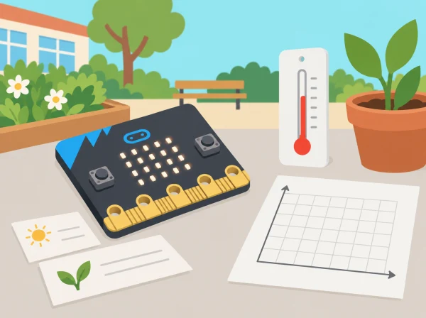

El consell escolar demana una observació senzilla del pati: quins llocs tenen més llum, quines zones són més fresques o com es poden mostrar avisos útils? Els equips aprenen a classificar dades, explorar sensors, dissenyar un gadget i programar una condició. La placa mostra un prototip d’aula, no és un termòmetre calibrat ni un assistent que escolta converses.
BBC micro:bit, MakeCode, ordinador, targetes, llapis i full de registre. Els sensors de llum, brúixola, acceleròmetre i temperatura varien segons la versió i l’entorn; confirmeu els blocs i les limitacions de la placa disponible. No cal connexió a internet ni compte d’usuari.
Recolliu una classificació de dades, pla de mostreig, taula amb unitats i condicions, diagrama d’entrada-procés-eixida, programa amb condició i proves al voltant del llindar. Valoreu si les conclusions respecten els límits del sensor i si el gadget resol una necessitat concreta sense recollir dades personals.
Per a cada lectura, l'equip completa: pregunta, lloc genèric, sensor o font, valor i unitat, condició observada, repetició i dubte. En la sessió 1, compareu una observació («la placa mostra 120») amb una interpretació («ací hi ha menys llum») i una opinió («preferisc aquesta zona»). Separeu-les en tres columnes i acordeu quina es pot comprovar amb una prova.
En la caça de dades, feu dos o tres punts de mesura comparables i repetiu cada lectura mantenint orientació i altura semblants. No cal cobrir tot el pati: un mostreig menut i ben explicat és més útil que una col·lecció de valors sense procediment. Anoteu si una ombra, un núvol o l'escalfament de la placa poden haver canviat el resultat. Si el sensor no està disponible o els blocs varien entre versions, feu servir un conjunt fictici marcat com a simulat i no el presenteu com a mesura real.
Després de representar les lectures amb una taula o pictograma, cada equip selecciona una necessitat concreta del projecte escolar. Dibuixa una cadena d'entrada, procés i eixida: el sensor obté una lectura; una condició la compara amb un llindar; la placa mostra una icona o un missatge. El grup justifica el llindar amb les seues pròpies proves i anota què passaria just per damunt o per davall. Proveu tres valors —baix, igual al llindar i alt— i confirmeu l'eixida esperada abans de provar el programa en un altre lloc.
Per al menú de l'assistent digital, feu un mapa d'estats senzill: inici, opció A, opció B i retorn. Un company prova cada botó sense rebre instruccions dels autors i registra si arriba a l'opció prevista. Aquest control d'estats ajuda a detectar una eixida sense camí de retorn o un botó sense resposta; no implique cap processament de veu ni intel·ligència artificial.
Reviseu cinc criteris amb «amb suport / en procés / de manera clara»: classifica dades i opinions; documenta condicions de mesura; representa el sistema amb entrada, procés i eixida; prova el llindar amb casos propers; i comunica una limitació concreta del sensor. Cada equip mostra el prototip a una altra parella, que intenta seguir les instruccions i proposa una pregunta, no una nota. La versió revisada inclou almenys un canvi justificat a partir d'aquest retorn.
Mesureu espais amb autorització i no anoteu qui hi era. Repetiu lectures i registreu variacions d’orientació, ombres o escalfament de la placa. Les lectures són aproximades; un canvi o una correlació no demostra per si sol una causa ni permet generalitzar a tot el centre.
Aquesta situació adapta les cinc lliçons de micro:bit Data handling: What is data?, Data treasure hunt, Sensor gadget design, Data conditions & selection i Digital assistants. Els punts de recollida, el gadget, les dades d’exemple i les preguntes són propis; es mantenen els objectius de dades, sensors, algoritmes, condicions, disseny i depuració.